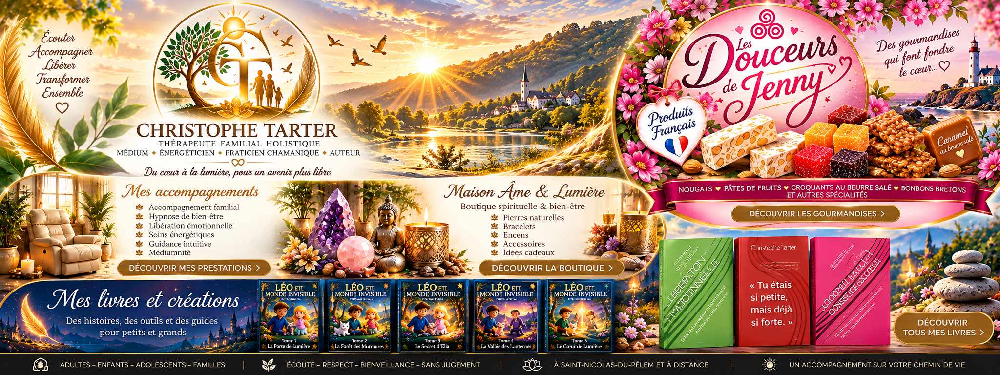

Accompagnements
Un espace d’écoute pour les adultes, les enfants, les adolescents et les familles.
En savoir plus →Accompagnement familial et émotionnel, hypnose de bien-être, boutiques et livres pour petits et grands.

Un espace d’écoute pour les adultes, les enfants, les adolescents et les familles.
En savoir plus →Pierres, encens, bracelets, bougies et objets de bien-être.
En savoir plus →Gourmandises françaises, coffrets, offres pour CSE et associations.
En savoir plus →Des histoires, témoignages et outils pour explorer ses émotions et nourrir l’imagination.
Retrouvez les informations et les modalités de prise de rendez-vous sur mon site actuel.